Stage de 1ère année de Master (2 mois)

Présentation
Durant ma première année de master de physique fondamentale à l'Université de Paris, j'ai pu effectuer un stage de 2 mois dans le département d'Astrophysique des hautes énergies du laboratoire d'astroparticule et de cosmologie de Paris (APC) sous la direction d'Alexis Coleiro. J'ai pu travailler sur des méthodes de triangulation d'un signal de neutrinos provenant de supernova à effondrement de coeur (CCSN).
Principe et détection
Dans cette première étude, on considère 5 détecteurs placés à différents endroits sur le globe :
- KM3NeT (Mer Méditerranée)
- Super-Kamiokande (Japon)
- Hyper-Kamiokande (Japon)
- Icecube (Antarctique)
- JUNO (Chine)
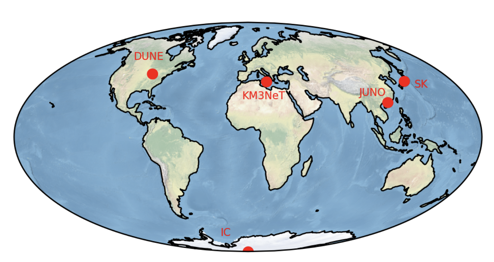La position des détecteurs ainsi que leurs nombres jouent un rôle déterminant dans les futur résutlat sur la localisation de la source de neutrinos. Plus le nombre de détecteur est grand, plus petite sera l'incertitude sur la position. De même, plus les détecteurs sont éloignés, plus petite sera l'air de confiance à 90 %. La figure ci-dessous montre comment fonctionne la méthode de triangulation. Pour deux détecteurs, la source se trouve à l'intersection des deux sphères, soit un cercle.
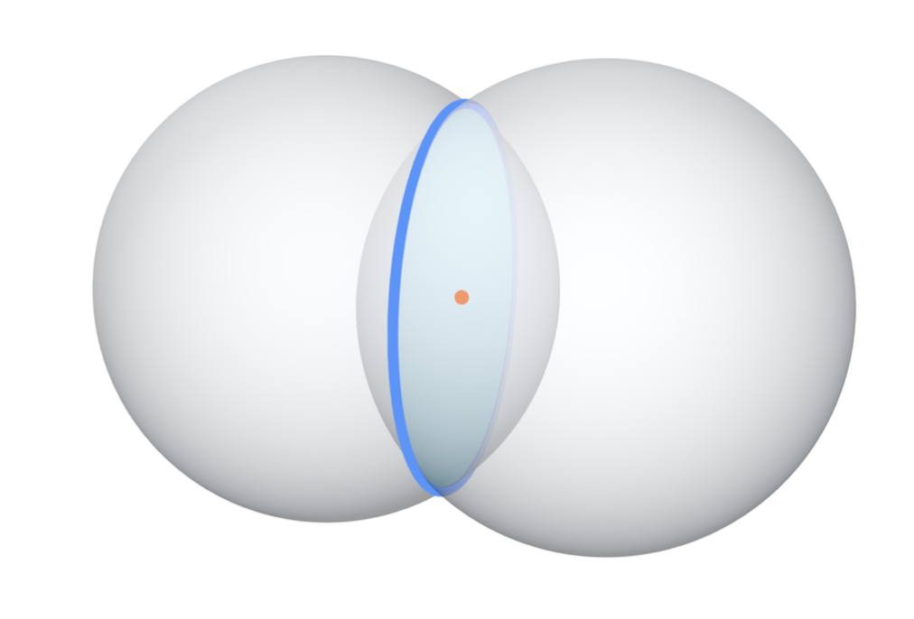On peut relier l'intervalle de temps avec la position des détecteurs avec la relation :
`Delta t_(ij) = ((vec(r)_(i) - vec(r)_(j)).vec(n))/c`
où est la direction de visée et est la célérité de la lumière. Les positions relatives des détecteurs produisent un délai entre les deux détections du fait de la vitesse finie de la lumière et de la position fixe des détecteurs. Cette différence permet la construction d’un minimum de la fonction qui sera la position privilégié de notre source dans le ciel.
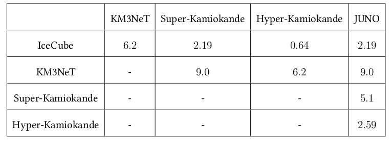
Le tableau ci-dessus montre l'incertitude sur le décalage temporel entre les détections pour chaques paires de détecteurs (en ms). La position des détecteurs jouent un rôle déterminants dans la localisation de la source, plus ceux-ci sont éloignés et plus le décalage temporel sera grand : on aura une localisation plus précise de la source. Lors de nos expériences, pour un ensemble de détecteurs donnés, on reconstruit un décalage temporel observé que l'on appelera `Delta t_(ij)^(obs)` . En comparaison, on tente de localiser la source sur l'ensemble du ciel pour lesquelles chaque direction de visée nous donnerais un certains décalage temporel, on le notera à présent `Delta t_(ij)^(true)`. En comparant maintenant ces deux décalages temporels pour une certaine direction de visée (que l'on caractérisera par l'ascension droite `alpha` et la déclinaison `delta` ) et en prenant en compte l'incertitude sur la détection noté `sigma_(ij)` , on peut reconstruire une fonction `chi^2 (alpha, delta)` nous donnant la probabilité de trouver la source dans chaque pixel.
Résultats
Localisation
La réalisation de simulation Monte-Carlo basé sur le calcul de N expériences est une méthode pour reconstruire une distribution de probabilité sur la position de la source. Comme nous l’avons présenté précédemment, nous tirons au hasard une valeur de selon une loi de distribution gaussienne. On peut donc recréer une carte de en fonction des deux paramètres libres et . Il s’agit d’une représentation en deux dimensions de la fonction 3. La dernière étape consiste à trouver le minimum de cette fonction que l’on sauvegardera. La répétition de ces N expériences permet de créer une carte qui nous montre l’aire de confiance à 90%. Dans la suite de cette étude, on considèrera une source se situant aux coordonnées du centre galactique, soit . L’ensemble des détecteurs cités précédemment sera utilisé lors des calculs. En effet, plus nous avons de détecteurs, plus la méthode de triangulation sera précise. L’ajout de chacun d’entre eux permet de contraindre un peu plus la localisation de la supernova.
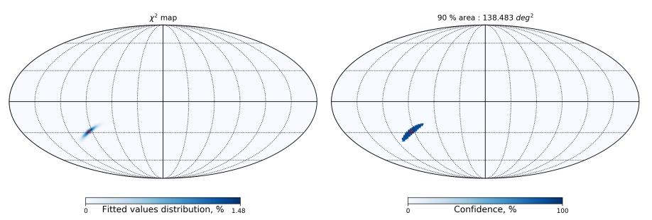Sur la figure ci-dessus, le résultat des simulations Monte-Carlo est représenté. Sur la gauche, nous avons la distribution des N minimums de la fonction . En effet, sur la carte, la couleur de chaque pixel représente le nombre de fois où le minimum de la fonction se trouve dans une direction donnée du ciel. Ces minimums sont tous regroupés autour d’une position et forment ainsi notre distribution de probabilité sur la localisation de la source. A droite, nous avons représenté l’aire de confiance à 90% de la distribution. Cela signifie que pour toutes nos expériences, nous avons 90% des minimums qui sont tombés dans cette région du ciel.
Distribution de l'aire de confiance
Précédemment, nous avons pu voir le résultat de la méthode de triangulation par des simulations Monte-Carlo. Nous avons vu que l’on pouvait assez bien reconstruire la position de la supernova avec cette méthode et ainsi tracer un contour à 90% qui nous indiquerait la portion du ciel où la source devrait se trouver. Seulement, la position de la source dans le ciel influence directement cette aire à 90% . Ici, on va essayer de voir cette différence en fonction de la position de la source. Pour ce faire, on utilisera deux méthodes différentes. La première étant une méthode type Monte-Carlo, qui on le rappelle s’effectue en calculant le résultat sur N expériences. Cette méthode est assez précise mais nécessitent de longs temps de calculs. Cela nous amène à notre deuxième méthode qui elle ne nécessite qu’une seule expérience pour chaque position. Elle sera beaucoup plus rapide et permettra de créer une carte grâce à une formule analytique, donc sans variation et dans un cas idéal.
Méthode Monte-Carlo
Pour chacune des expériences, on place successivement la source dans chaque pixels pour calculer ensuite l'aire de confiance à 90 %. On va pouvoir voir où la détection de la source est plus difficile et au contraire où elle est facilitée.
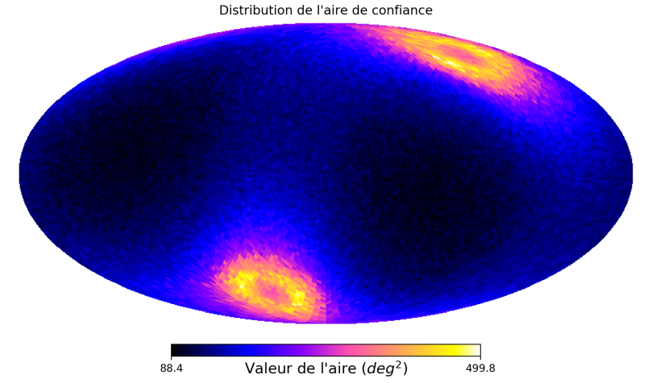Sur cette figure, nous avons représenté la valeur de l’aire de confiance à 90% pour chaque position possible de la source. Nous avons réalisé cette simulation avec 500 expériences par pixels, c’est-à-dire que nous avons créée 500 cartes de `chi^2` puis trouvé les 500 minimum de la fonction pour une même position dans le ciel. Cette méthode permet donc de voir la distribution de l’aire à 90% en fonction de la position de la source.
Méthode analytique
Nous allons donc introduire maintenant une méthode analytique permettant d’obtenir des résultats semblables et plus rapidement.
`chi^2(alpha, delta) ≤ chi_(min)^2 + Delta chi_(q, beta)^2`
L’équation nous permet de trouver les positions dans le ciel où la probabilité d’avoir une source aura atteint un certain niveau de confiance `beta` . Cette équation prend aussi en compte le nombre q de degrés de liberté, dans notre cas `q=2` pour l’ascension droite `alpha` et la déclinaison `delta` . Le terme `chi_(min)^2` est simplement le minimum de notre carte de `chi^2` . Le terme `Delta chi_(q, beta)^2` est une valeur tabulée fixe. La résolution de l’équation s’effectue simplement en retrouvant les positions où la valeur de la fonction `chi^2` est plus petite que le terme de droite. Nous remarquons que suivant le niveau de confiance que l’on souhaite, la valeur de `Delta chi_(q, beta)^2` sera différente et donc l’aire de confiance aura une surface plus ou moins grande. L’avantage de cette méthode est quelle permet de réduire considérablement le temps de calcul puisqu’on effectue seulement une expérience par pixel.
Probabilité bayésienne
Précédemment, nous avons décrit notre méthode de triangulation par une approche fréquentiste. Nous avons démontré que la localisation dans le ciel de la supernova fait varier l’aire de confiance à 90% obtenue par triangulation. Nous allons maintenant essayer d’implémenter une méthode de probabilité bayésienne afin de contraindre encore plus la position de la supernova. En effet, cette étude consiste a étudier un algorithme de triangulation permettant de détecter la prochaine supernova galactique. On va donc considérer dans la suite que la source se trouve dans notre galaxie. Pour étudier l’influence de cette information, nous utiliserons le théorème de Bayes :
`P(A|B) = (P(B|A) P(A))/(P(B))`
Le théorème précédent permet de calculer des probabilités en prenant en compte un fait que l’on connaît en amont. Ici, on définit P (B|A) comme la vraisemblance (ou likelihood en anglais). Ce terme nous décrit la distribution de probabilité sur la présence d’une source dans une certaine position (α, δ) du ciel. Le deuxième terme P (A) est la probabilité à priori (ou prior), il s’agit d’un terme qui nous donne une information déjà connu qu’il faut prendre en compte. Il va permettre de calculer d’une manière différente les probabilités de présence de la supernova dans le ciel. Finalement, le dernier terme P (B) est l’évidence, c’est un terme de normalisation. On pourra donc d’une part s’affranchir du dénominateur et d’autre part remplacer les "A" et "B" par les variables dans notre cas, soit les coordonnées (α, δ) ainsi que θ pour notre prior. On aura donc le théorème de Bayes qui s’écrira comme suit :
`P(alpha, delta |theta) ∝ P(theta|alpha, delta) P(alpha, delta)`
Il nous faut faire attention au choix de la carte qui nous servira de prior. Celle-ci est un des éléments centraux de cette étude, nous savons que les supernovae à effondrement de coeur sont causées par la mort des étoiles massives. Une bonne approximation sera donc de prendre comme prior une carte montrant la densité d’étoile dans notre galaxie. En effet, il paraît logique que plus le nombre d’étoile dans une direction du ciel est important, plus la probabilité d’observer une supernova dans cette même direction sera importante. Maintenant que nous avons nos deux cartes définies à partir du théorème de Bayes, nous pouvons les utiliser afin de contraindre la position de la source. De la même manière qu’avant, nous définissons une source placée au centre galactique.
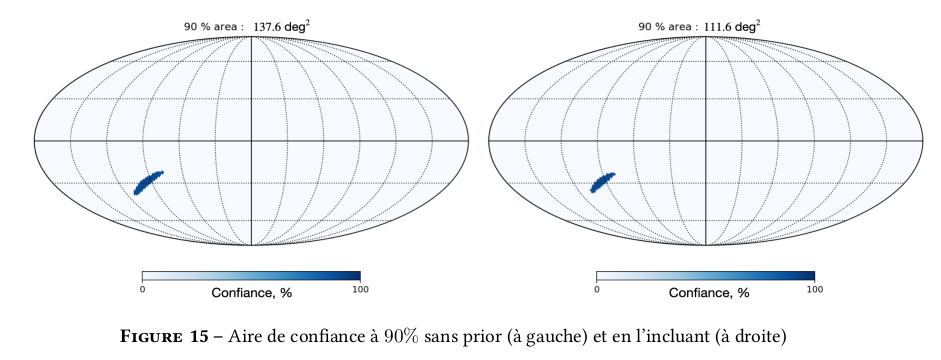Ce résultat montre que l’application d’une condition simple sur la distribution de probabilité permet de réduire de manière significative l’aire de confiance. La source a été placé initialement au centre galactique mais on pourra effectuer la même manoeuvre pour toutes les positions du ciel possible. De la même manière qu’avec la figure 11, nous plaçons la source dans chaque pixel successivement en calculant en même temps l’aire de confiance dans toutes les directions.
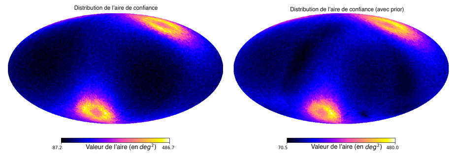La figure ci-dessus nous montre deux cartes de distributions de l’aire de confiance (toujours à 90% ). Celle de gauche a été calculé par une approche fréquentiste, quant à celle de droite, elle a été calculé par l’approche bayésienne que nous avons présenté. La couleur de chaque pixel représente la valeur de la surface de l’aire à 90% . On commence à voir une différence entre ces deux cartes du fait de l’ajout d’un prior dans les calculs. De manière à mieux distinguer la différence entre les deux cartes de la figure ci-dessus, nous pouvons introduire la formule permettant de calculer l’écart-relatif tels que :
`f_(text{relatif}) = (f_(text{prior}) - f_(text{sans prior}))/(f_(text{prior})) × 100`
L’écart relatif peut être calculé en remplaçant `f_(text{prior})` par la carte de droite et `f_(text{sans prior})` par la carte de gauche de la figure ci-dessus. Cette carte doit nous montrer les directions où l’approche bayésienne est plus précise qu’une approche fréquentiste et au contraire, les emplacements du ciel où cette approche ne permet pas une bonne reconstruction de la position de la source.
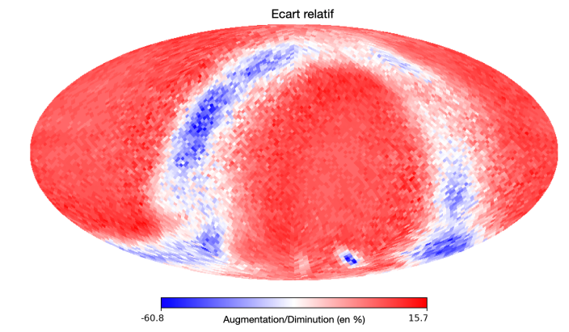Sur la figure ci-dessus, l’écart-relatif entre les deux cartes de la figure 16 est représenté. Sur cette carte, la couleur de chaque pixel représente la variation de l’aire à 90 % entre les deux cartes. La barre de couleur est faite de tel sorte que lorsque la couleur du pixel tend vers le bleu, la carte qui inclue le prior a une aire plus petite que celle qui ne prend pas en compte le prior. Si la couleur est autour du blanc, il n’y a pas une grande différence entre les deux cartes. Enfin, si la couleur du pixel tend vers le rouge, la carte qui inclue le prior possède une aire à 90 % plus grande que celle qui est calculé sans le prior. Pour finir, l’intensité du pixel correspond à la valeur (en pourcentage) de la diminution ou de l’augmentation de l’aire à 90 % lorsque la source se trouve dans ce pixel. Le plan galactique ainsi que le petit et le grand nuage de magellan sont plutôt bien reconstruit par cette méthode ce qui signifie que ceux-ci ont une influence notable sur le résultat final.
La diminution entre l’approche bayésienne et l’approche fréquentiste peut aller jusqu’à 60% lorsque la source se situe dans notre galaxie ou dans des galaxies voisines. Au contraire, lorsque la source se trouve en dehors du plan galactique, on a une augmentation de l’aire à 90% ce qui est normal puisque notre prior concerne les sources potentielles de notre galaxie et non les sources extragalactiques. Le fait que l’aire de confiance augmente en taille lorsque la source est en dehors du plan galactique est bon signe car cela signifie que la probabilité dans chaque pixel composant cette aire diminue par rapport à l’approche fréquentiste.
Au final, l’utilisation d’une approche bayésienne permet de diminuer la taille de l’aire de confiance lorsque la source est galactique de manière notable. En revanche, pour une source extragalactique, nous avons montré que la probabilité de détection diminue dans chaque pixel ce qui est encourageant. Cette approche peut donc être un bon moyen de localiser de manière précise la prochaine supernova galactique.
Quelques exemples ...
Dans les figures précédentes, la combinaison des 5 détecteurs permet de calculer une zone de confiance assez restreinte, dans la suite nous pourrons essayer de voir les différentes zones de détections pour différentes combinaisons de détecteurs.
IceCube - JUNO - KM3NeT
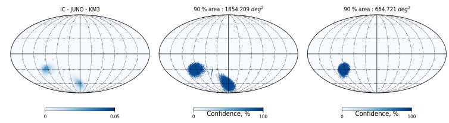La même expérience peut être refaite pour une autre combinaison de 3 détecteurs. Ici nous avons choisi IceCube - JUNO - KM3NeT. L’aire de confiance est beaucoup plus étendue que pour le trio de détecteur précédent, ceci est du à l’incertitude entre KM3NeT et JUNO qui est nettement supérieure. Cependant, l’approche bayésienne permet encore une fois de réduire considérablement la taille de l’aire de confiance à 90 %. La diminution est encore une fois de l’ordre de 60 %.
IceCube - KM3NeT - Hyper-Kamiokande
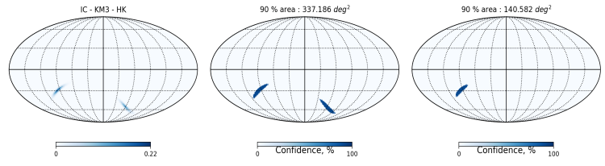Nous pouvons retrouver ce que nous montre la figure, l’intersection entre 3 sphères est deux points dans laquelle une des deux contient notre source. Nous utilisons ici IceCube - KM3NeT - Hyper-Kamiokande. De gauche à droite, nous avons la carte de distribution des N minimums de la fonction `chi^2` , l’aire de confiance à 90 % dans une approche fréquentiste et enfin l’aire de confiance en utilisant une approche bayésienne. Avec la première approche, la valeur de l’aire est d’environ `330 text{ deg}^2` , en revanche, en utilisant une approche bayésienne, la valeur de cette surface diminue jusqu’à `140 text{ deg}^2` . La diminution est très importante (environ 58%) et signifie que notre approche bayésienne fonctionne tout autant pour seulement 3 détecteurs.
IceCube - KM3NeT - Hyper-Kamiokande - JUNO
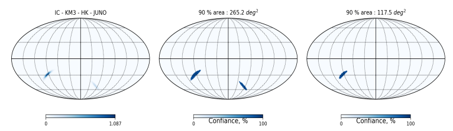
Conclusion
En conclusion, plusieurs phénomènes sont liés aux supernovae à effondrement de coeur. Le trapping notamment pourrait jouer un rôle très important dans le mécanisme de ces phénomènes astrophysiques cataclysmiques.
Le flux de neutrinos détecté quelques heures avant le signal électromagnétique nous permet effectivement de localiser la source de manière assez précise. La détection de la prochaine supernova galactique est un enjeu majeur dans les années à venir, elle nous permettrait de mieux comprendre le rôle des neutrinos au sein des étoiles en fin de vie ainsi que les propriétés intrinsèques de ces particules mystérieuses.
La suite de cette étude permet d’introduire les probabilités bayésiennes, dans laquel on rajoute un prior. Ceci nous permet de contraindre la position de la source dans le ciel. On a pu ensuite quantifier cette différence entre une approche fréquentiste et l’approche bayésienne par une carte de différence relative. Celle-ci permet de montrer qu’une différence allant jusqu’à 60% de diminution en ce qui concerne les probabilités bayésiennes.
Pour finir, nous avons pu appliquer l’algorithme précédent pour différentes paires de détecteur et non tous en même temps. Le résultat qui en sort est que les probabilités bayesienne permettent, tout comme avant, de réduire considérablement l’aire de confiance à 90% . Cette diminution est du même ordre de grandeur que pour les 5 détecteurs. Au final, l’implémentation d’une méthode de surveillance en temps réel (SNEWS) peut permettre d’augmenter considérablement la qualité d’observation de la prochaine supernova galactique, ce qui pourra nous aider à mieux comprendre le rôle des neutrinos dans ces mécanismes physiques.